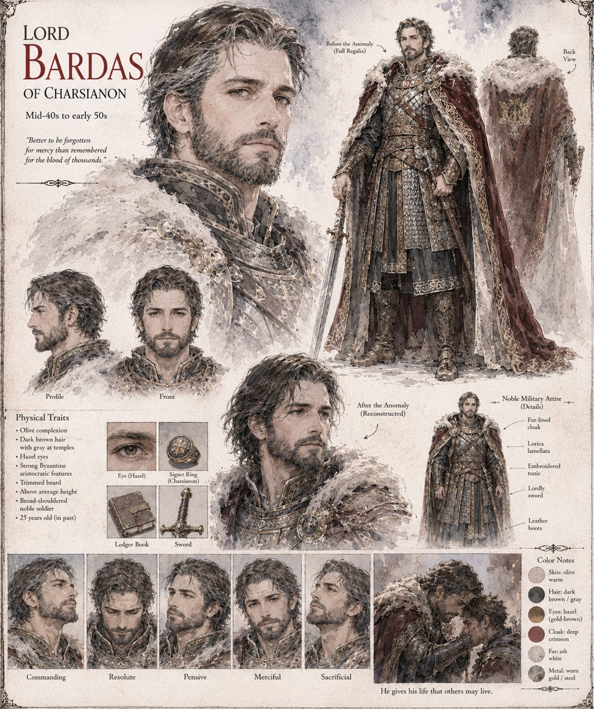

Bardas
Lord of Charsianon · mid-40s to early 50s · reconstructed
Lord of Charsianon, heir to a fortress with more history than roof and a reputation for paying every debt his lands ever incurred — to a moneylender, a rival, or a mountain. When the shepherds bring him the keening below Hemiakmon Ridge he hears not a ghost story but a ledger left unbalanced, and rides up with twelve knights to collect the silence he is owed. The chamber takes a full accounting of all thirteen, discards the originals, and sends thirteen back, exact down to a thumbprint.
What returns forgives Marina's four years of rent, refuses his father's wine and does not sleep. He sends Basileios's annual brandy back with an itemised account of nine years of skimming, hands Artavasdos a ledger in place of a bribe, and tells Theodora, truthfully, that he felt no distress in her absence. When Leo's coalition reaches the river he does the arithmetic, and on the third of Ferren he walks out of the gate unarmed with the Twelve. He is executed last, by Loukas, and spends his final words on the metallurgy of the blade. The Custodian's closing log singles out his voluntary self-termination, calculated to minimise harm to non-subjects, as behavior no standing model predicted.
“Better to be forgotten for mercy than remembered for the blood of thousands.”
Appears In

Related Subjects


Related Records

Bardas rides up to Hemiakmon Ridge with the Twelve, to collect the silence he is owed.

Bardas forgives Marina four years of unpaid grazing rent, and she weeps before she understands why.

Bardas reviews every judgment himself and reverses the bought ones, without temper and without exception.

Bardas and the Twelve walk out of the gate at noon, unarmed, to hand themselves over to the coalition.